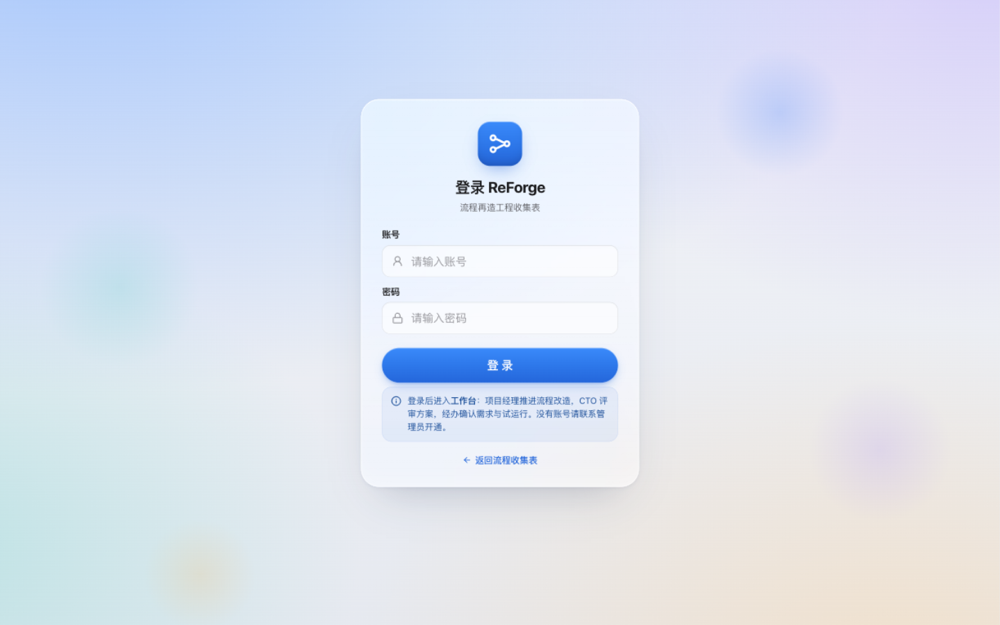
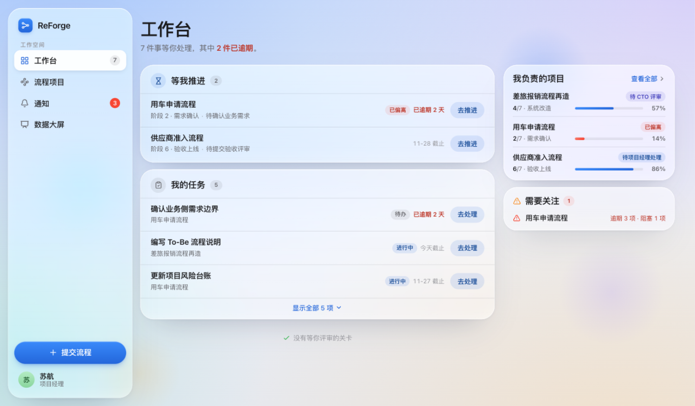
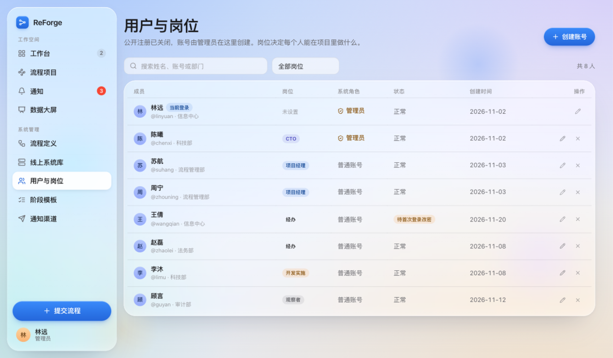
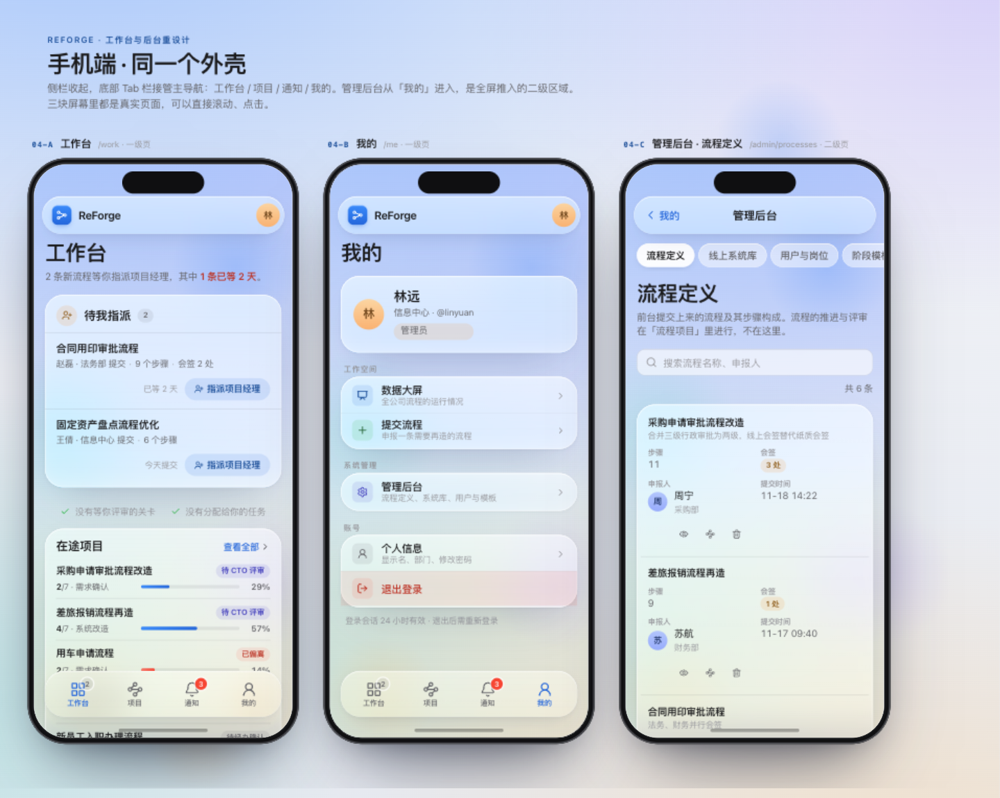

ReForge · 工作台与后台重设计 · 设计稿
一个外壳，两组导航
现在的乱，根子在结构不在视觉：两套外壳、两套登录态、导航互相穿插。这次把所有登录后的页面收进同一个外壳，导航分成「工作空间」和「系统管理」两组；工作台只回答“我现在要做什么”；后台五个分区套同一个模板、各有一条地址；登录成功一律进工作台。视觉沿用已定稿的 Liquid Glass，不改风格。




为什么乱，怎么改
左边是从代码里读出来的现状，右边是对策
| 现在 | 改成 | ||
|---|---|---|---|
| 1 | 两套外壳、两套登录态工作台 / 项目 / 通知用一套悬浮顶栏；/admin 自己另写了顶栏和侧栏，把会话校验、登录卡、强制改密、退出各复制了一遍。 | 一个外壳。所有登录后的页面共用：桌面是左侧悬浮侧栏，手机是底部 Tab 栏。后台只是外壳里的一个分组。 | |
| 2 | 导航互相穿插「工作台」既是前台顶栏第一项，又是后台侧栏第一项；「后台」在前台是个文字链，进了后台再用「工作台」「返回前台」两个文字链回去。 | 两组导航，互不重复。「工作空间」= 工作台 / 流程项目 / 通知 / 数据大屏；「系统管理」= 后台五个分区，只有管理员看得到。「提交流程」固定在侧栏底部。 | |
| 3 | 顶栏右侧 5 个图标并排后台、个人信息、数据大屏、返回前台、退出。其中「返回前台」是个没有文字的左箭头。 | 顶栏取消。数据大屏进侧栏；个人信息和退出收进账号菜单；「返回前台」换成有文字的「提交流程」。 | |
| 4 | 后台分区不进地址栏五个分区靠页面内部状态切换：刷新回到第一项，没法分享和后退。侧栏叫「流程定义」，面板标题却写「流程管理」。 | 每个分区一条地址。/admin/processes 等五条；页头统一成「大标题 + 一句话说明 + 主操作」，侧栏和页头用同一个名字。 | |
| 5 | 工作台 4 个 tab 互相包含「待我处理」里已经装了另外三个 tab 的全部内容；「我参与的项目」和「流程项目」页基本重复；全局统计挤在页头。 | 取消 tab。主列是一张按动作分组的清单，右栏放项目和风险。「全部项目」只留在「流程项目」，全局统计归「数据大屏」。 | |
| 6 | 登录去向不统一四个页面各自渲染登录卡，登完原地不动；在 /admin 登录就留在后台，普通成员还会看到一张「需要管理员账号」的卡片；首页没有登录入口。 | 唯一登录页 /login，成功后一律进 /work。首页顶栏按登录状态显示「登录」或「工作台」。 |
结构对比
红字是重复的部分
现在 · 三套外壳
/work /projects /inbox/admin/monitor4 份之后 · 一个外壳
/work /projects /inbox /monitor /admin/*工作台 / 项目 / 通知 / 我的/login→成功后 /work地址表
页面内容没变的也列出来，方便对照
| 地址 | 归属 | 内容 |
|---|---|---|
/ | 公开 | 流程收集表。顶栏：未登录显示「登录」，已登录显示「工作台」。 |
/login | 公开 | 唯一的登录页。成功后一律进 /work；首次登录先改密，改完同样进 /work。 |
/work | 工作空间 | 工作台，登录后的首页。 |
/projects/projects/[id] | 工作空间 | 流程项目、项目详情。页面本身不变，只是换进新外壳。 |
/inbox | 工作空间 | 通知。页面本身不变。 |
/monitor | 工作空间 | 数据大屏。全屏、不套外壳，右上角一个「返回」。 |
/admin/processes | 系统管理 | 流程定义 |
/admin/systems | 系统管理 | 线上系统库 |
/admin/users | 系统管理 | 用户与岗位 |
/admin/stages | 系统管理 | 阶段模板 |
/admin/channels | 系统管理 | 通知渠道 |
/me | 手机 | 「我的」Tab：数据大屏、提交流程、管理后台、个人信息、退出。桌面端这些入口在侧栏底部，不用这一页。 |
工作台：一张清单，四类行动
同一套布局，不同的人看到不同的分组
| 分组 | 什么时候出现 | 点进去 |
|---|---|---|
| 待我评审 | 我是当前关卡的评审人，且有等我决定的评审 | 项目详情 · 评审 |
| 待我指派 | 仅管理员。有新流程在等项目经理 | 指派弹窗 |
| 等我推进 | 仅项目经理。我负责的项目轮到我了，或者已经逾期、阻塞 | 项目详情 |
| 我的任务 | 所有人。分配给我的未完成任务 | 项目详情 · 计划 |
- 有内容才成卡。空的分组收成一行「没有等你评审的关卡」；四类全空时显示「都处理完了」和几个快捷入口。
- 每组最多 3 行，其余「显示全部 N 项」就地展开，不跳页。
- 页头只有一句话摘要，例如「7 件事等你处理，其中 2 件已逾期」。在途 / 待评审 / 逾期 / 阻塞这些全局数字不再放这里。
- 右栏。管理员和 CTO 看「在途项目」，其他人看「我负责（参与）的项目」；「需要关注」只给管理员、CTO、项目经理。
- 侧栏的数字。「工作台」后面是以上四类的合计，「通知」后面是未读数，从任何页面都看得到。
后台：五个分区，一个模板
分区不同，骨架相同
- 新增类操作收进弹层。「创建账号」原来是一大块常驻在列表上方的表单，现在改成页头的一个按钮；「新增系统」「新增渠道」同理。列表页只剩看和找。
- 权限写在页头。「用户与岗位」第一句就是「公开注册已关闭，账号由管理员在这里创建」，不再靠表单下面的小字补充。
- 阶段模板保留时间轨。每个阶段一张摘要卡：出口关卡、评审方式、评审人、必交付物、默认任务；点开才编辑。
- 手机上从「我的」进入。全屏二级页，分区用顶部横向切换条，表格变成一张张卡片行。
登录之后去哪
只有一条默认路径
/login→成功后 /work
首次登录需改密→改密弹层→/work
会话失效→/login
- 普通成员打开
/admin/*：直接回工作台，不再显示「管理后台需要管理员账号」那张卡片，侧栏里也看不到「系统管理」这一组。 - 首页「管理后台」入口换成「登录」/「工作台」。首页是公开的提交表单，不该人人都看到一个点进去会被拒的入口。
需要你定的三件事
每件我都给了一个默认做法，不反对就按它落地
侧栏，还是保留悬浮顶栏？
我选了左侧悬浮侧栏：八个入口一眼看全，后台五项都有文字，不会挤。代价是工作台、项目、通知三页的布局会跟着变。
如果你更想留住现在的药丸顶栏，后台五个分区就得做成顶栏下面的第二行标签。
登录后要不要留一个例外？
按你的要求，登录后一律进工作台。唯一的例外场景：从项目链接或通知点进来、被要求登录，登完是回那个项目，还是照样进工作台？
目前站内没有任何链接会带着目标地址跳到登录页，所以默认不留例外。
手机上要不要「我的」这一页？
手机底部只有四个位置：工作台、项目、通知、我的。数据大屏、提交流程、管理后台、退出都收在「我的」里。
不加这一页的话，手机上只能像现在这样把导航挤成两行，后台入口也不好放。
落地顺序
四步都在前端，接口和数据不动，每步可以单独验收
外壳与地址
外壳换成侧栏 + 底部 Tab，后台并进来；加 /admin/[分区] 路由，旧地址 /admin 自动转过去。
登录
加 /login，成功后统一跳 /work；首页顶栏按登录状态换入口；去掉「需要管理员账号」卡片。
工作台
四个 tab 换成一张清单；全局统计移出；侧栏加待办和未读数字。
后台分区
五个分区套统一页头；创建账号、新增系统、新增渠道改成弹层；表格适配手机。